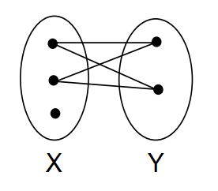

Um grafo G é bipartido se existem conjuntos de vértices X e Y tais que X ∪ Y = V(G), X ∩ Y = ∅ tal que, seja uv ∈ E(G), u ∈ X e v ∈ Y.
Ou seja, cada aresta de u a v, conecta os vértices em dois conjuntos distintos.
A ideia do algoritmo é baseada no seguinte teorema:
G é bipartido se, e somente se G não tem ciclo ímpar
Dessa maneira, podemos fazer uma busca profundidade com a finalidade de definir a árvore de busca em largura T de G.
Se T possui uma aresta primo ou irmão, então G tem ciclo ímpar, pois cada uma delas forma um ciclo ímpar com os caminhos de seus extremos até o seu ancestral comum em T.
Se não encontrar alguma dessas arestas, então os níveis ímpares de T contém os vértices X, e os pares, Y